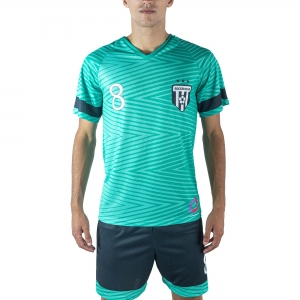
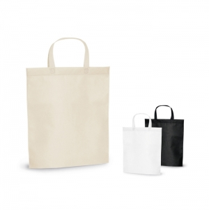
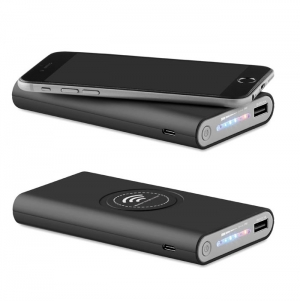
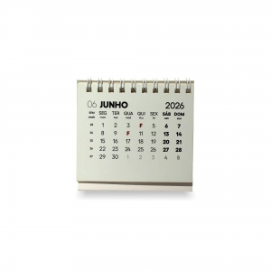

Guia de família
Canetas e escrita
Compare o tipo de escrita, o mecanismo, a recarga e o espaço livre no corpo antes de escolher a marca.
Explorar o guiaExplore famílias de brindes pela utilização, construção e personalização. Cada guia ajuda a comparar variantes e a preparar as perguntas sobre o artigo escolhido.
Compare o tipo de escrita, o mecanismo, a recarga e o espaço livre no corpo antes de escolher a marca.
Explorar o guia
Distinga transporte e consumo à mesa; compare formato, abertura, tampa, limpeza e zonas de personalização.
Explorar o guia
Compare composição, estrutura, gramagem, corte, medidas e cuidados antes de definir a posição do desenho.
Explorar o guia
Compare abertura, construção, compartimentos, alças e área livre de personalização com o conteúdo a transportar.
Explorar o guia
Escolha pela função e pelos dispositivos envolvidos; compare ligações, componentes e superfície separadamente.
Explorar o guia
Compare formato, páginas, encadernação, acessórios e consumíveis com a rotina de escrita e organização.
Explorar o guiaDefina a utilização e quem vai receber o artigo. Depois compare materiais e a área onde pretende a mensagem.